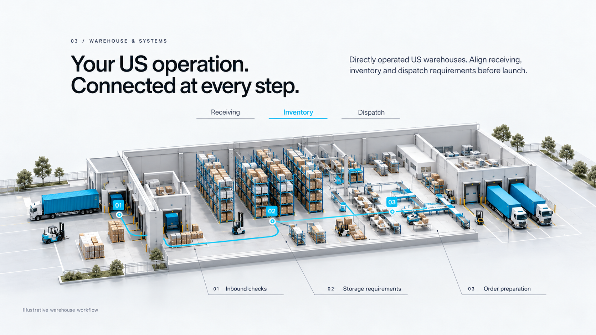
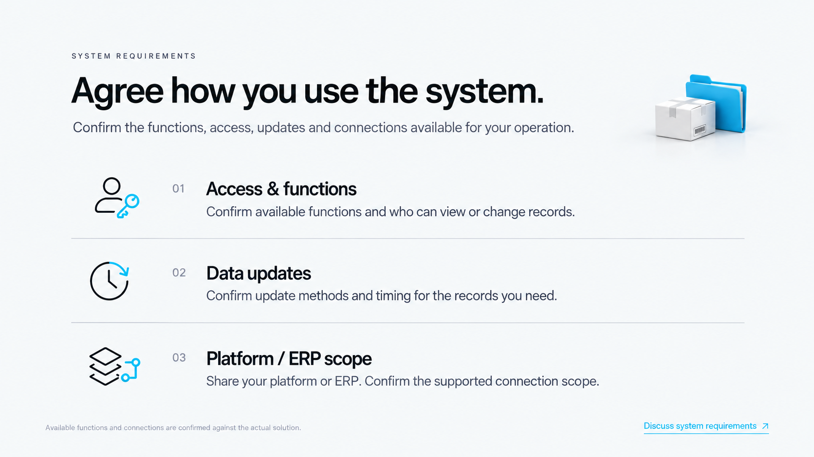

PNPLINE / WAREHOUSE & SYSTEMS REVISION창고 작업과 시스템 이용조건의 읽기 흐름을 분리했습니다
창고 화면은 작업방식에 집중하고, 시스템 확인은 단일열3행으로 정리했습니다. 실제적용에서는 이미있는 Systems 확장영역과 통합해 중복을 줄이는 제안입니다.
01 창고 작업 흐름
기존 창고 컨셉 이미지입니다. 현재사이트의 브라우저 캡처는 아닙니다.

02 시스템 이용조건 확인

정지컨셉 검토페이지입니다. 현재웹사이트의 소스나섹션을 변경하지 않았습니다.